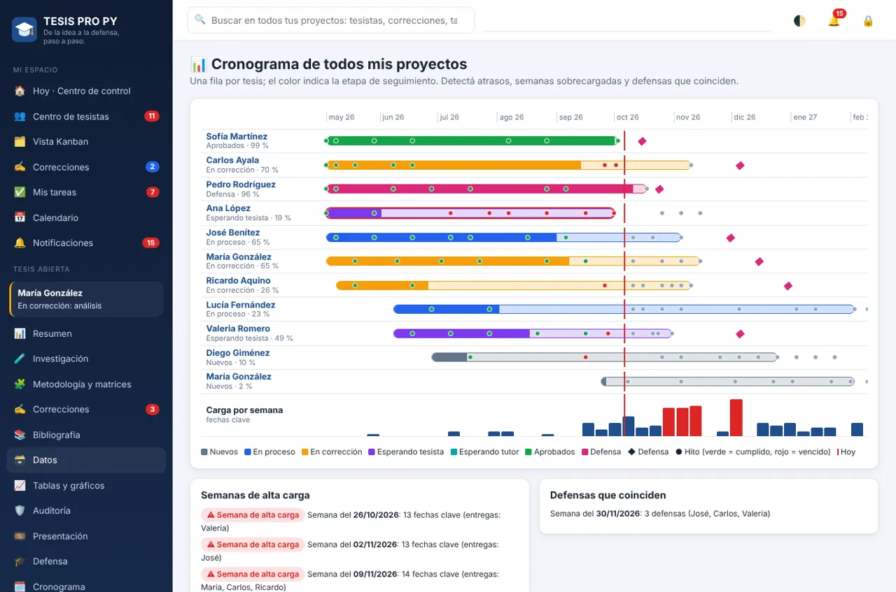
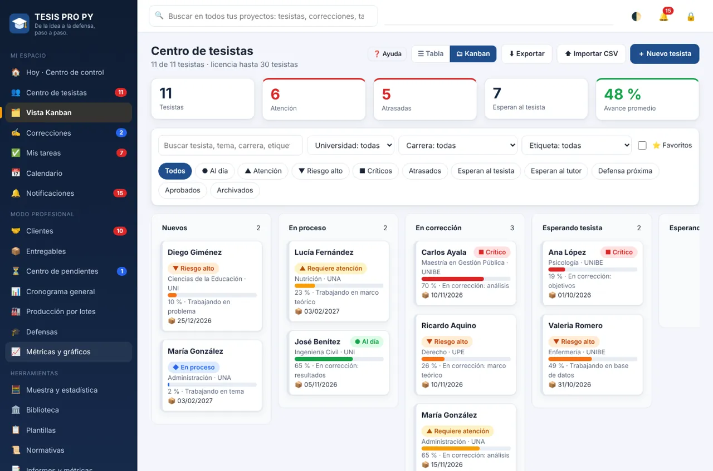
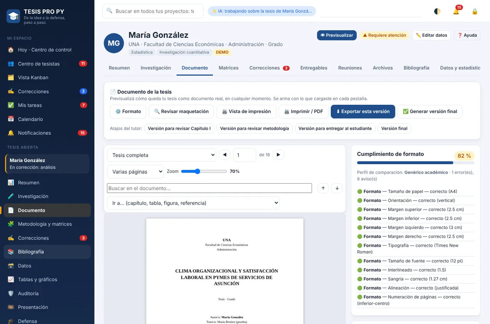

De la idea a la defensa, paso a paso.
Gestioná varias tesis desde un solo lugar: seguimiento, correcciones, estadística, presentación y defensa.
- Windows
- Sin internet
- Modo tutor y tesista
- 3 días gratis

Así se ve TESIS PRO PY



Todo lo que necesitás, en un solo lugar
Prioridades claras
El botón «¿Qué necesita mi atención?» te dice qué 5 proyectos revisar primero y por qué.
Toda la cartera a la vista
Tabla o Kanban de tesistas, semáforo con el motivo de cada color y cronograma general.
Correcciones ordenadas
Correcciones con prioridad, estado e historial. Menos correos y versiones perdidas.
Estadística en español
Descriptivos, t, ANOVA, correlación, regresión, chi-cuadrado y alfa de Cronbach, con interpretación.
Redactor con IA
Recorre cada punto de la tesis en orden con la IA que elijas, y exporta a Word o PDF.
Lista para defender
Auditoría de coherencia, presentación en PowerPoint y simulacro de defensa.
¿Para quién es? Tutores que dirigen varias tesis a la vez, y tesistas que quieren llegar ordenados a la defensa.
Elegí tu plan
Tocá el plan que te interesa y te pasamos el precio por WhatsApp.
Tutor
- Centro de tesistas completo
- Informes para coordinación
- Todas las herramientas por tesis
Tesista
- Menú simplificado
- Redactor, estadística y bibliografía
- Presentación y simulacro de defensa
Probalo gratis 3 días
Descargá TESIS PRO PY para Windows, instalalo y al abrirlo tocá «Empezar prueba gratuita». No necesitás licencia para probarlo, y si después comprás, lo que cargaste se conserva.
¿Ya sos cliente? Este mismo instalador actualiza tu programa. Tus tesistas, tus proyectos y tu licencia se conservan al actualizar.
Dudas sobre TESIS PRO PY
¿Sirve para cualquier universidad?
Sí. El tutor puede cargar el reglamento de cada universidad y el programa lo usa como referencia.
¿Mis datos se suben a internet?
No. Funciona sin internet y los datos quedan en tu computadora. La IA es opcional y te pregunta antes de enviar un texto.
¿Cómo se renueva la licencia?
Nos escribís por WhatsApp y la renovación se activa sola en tu programa cuando hay internet. No tenés que reinstalar nada.
Otras soluciones

 AULA SMART
AULA SMART
Plan de clase, trabajo práctico, examen y presentación con las capacidades del MEC ya cargadas. Pre-jardín a 9.º grado.
- Windows
- Sin internet
- Word · Excel · PowerPoint · PDF
- 3 días gratis

DOCENTE SMART PY
Planificación, evaluaciones, materiales, presentaciones y calificaciones con el currículo oficial del MEC incluido.
- Windows
- Sin internet
- Currículo MEC
- 3 días gratis

 ODONTO SMART
ODONTO SMART
Agenda, odontograma, presupuestos en PDF, cobros y mensajes de WhatsApp en un clic. Todo en un solo programa.
- Windows
- Tablet
- Sin internet
- 7 días gratis